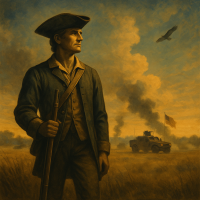

We Are the Guard
“We Are the Guard” is a patriotic song that tells the story of the National Guard — who we are and what we stand for. For more than 300 years, the Guard has been America’s first military force, born from the early citizen militias that protected their colonies long before our nation was formed. This song captures that spirit — duty, pride, and the enduring truth that the National Guard is always there when America calls.